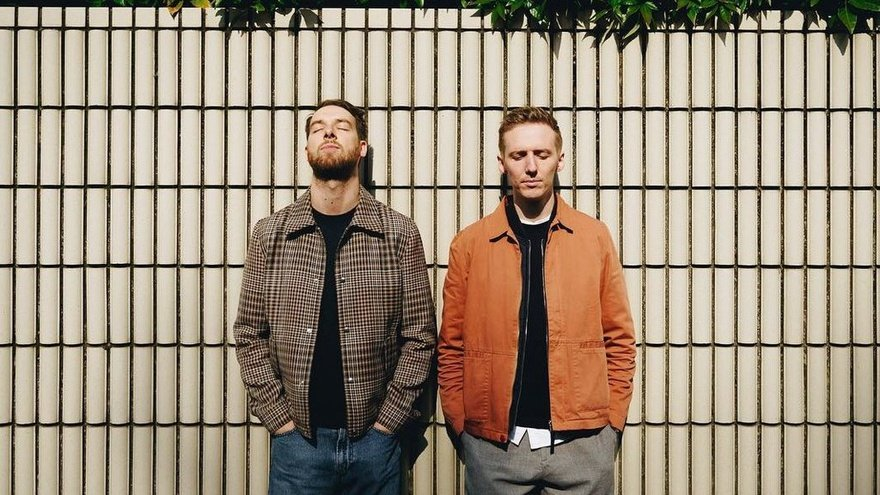
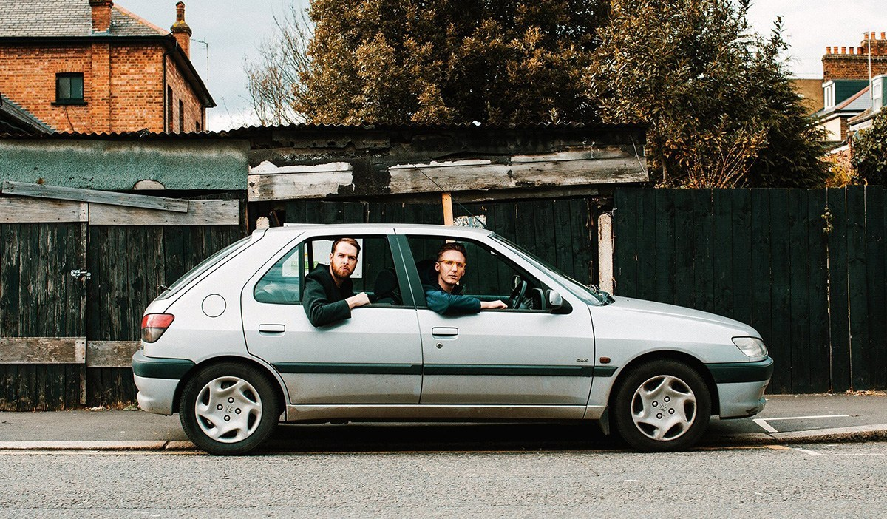

Sebagai sebuah duo yang digawangi oleh dua produser asal Inggris, James Hatcher dan Andy Clutterbuck bertemu kala berkuliah dan mulai berkolaborasi semenjak masih duduk mengemban studi. Mengutip Allmusic, inspirasi pemilihan nama “HONNE” dari bermuara dari sebuah konsep asal Jepang yang mengupas “true feelings” atau “perasaan yang jujur”. Mereka mengusung musik elektronik yang digubah menjadi alunan nada-nada pop yang hangat dan ramah. Berkiblat pada musik- musik Al Green dan Bill Withers, Honne kerap menggubah musik mereka yang cozy itu mampu diterima banyak orang lintas usia. Debut mereka, sebuah EP bertajuk Warm on a Cold Night mendarat pada bulan September 2014. Melaluinya, nama mereka semakin melambung, terutama dengan hit single title track-nya yang berhasil menjadi sensasi dengan sendirinya.

Berbicara studio album, Album perdana Honne hadir dengan nama yang akrab ditelinga. Ya, debut album mereka dikemas dengan nama yang sama seperti debut EP mereka, Warm on a Cold Night. Album perdana dari HONNE ini mengudara pada Juli 2015. Hits single seperti “Warm on a Cold Night”, “Someone That Loves You”, dan “Treat Your Right” dikemas ke dalamnya.
Berikut playlist dari HONNE yang sudah kami pilih. Happy listening!
(Rate : 98/100)
(Rate : 90/100)
(Rate : 91/100)